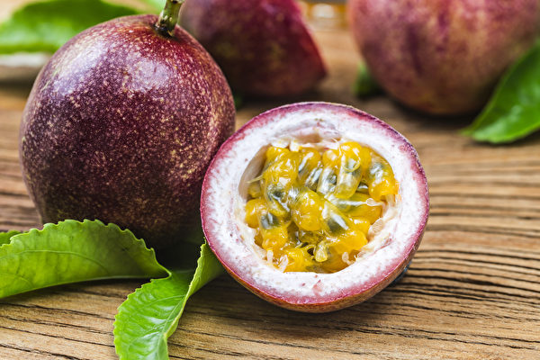
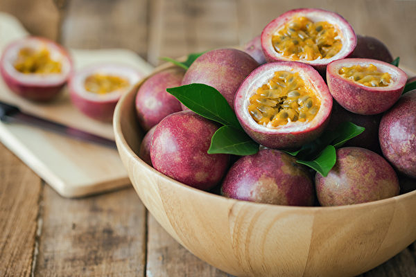
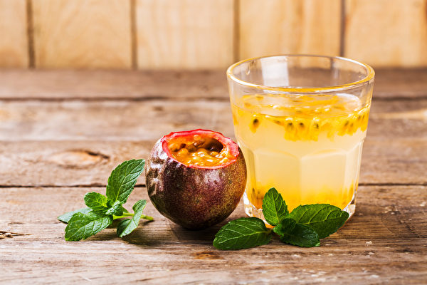

百香果
百香果營養成分一次看
根據衛福部食藥署食品營養成分資料庫，百香果營養價值包括豐富的膳食纖維、鉀、維生素Ｃ、維生素Ａ、鐵質、蛋白質等。更重要的是當中的植化素「類黃酮」，有抗發炎的效果。
而Healthline的資料顯示，每顆百香果含有約2克膳食纖維，屬於膳食纖維中等含量的水果；百香果內深綠色的種子則是含有白皮杉醇，也是一種抗氧化物質，且有研究發現可以改善胰島素抗性，有改善血糖的效果。

百香果的好處、功效
提高免疫力：百香果含豐富維生素，能增強對於感冒、流感或其它常見感染疾病的抵抗力。
抗氧化：β胡蘿蔔素的主要作用就是抗氧化；百香果籽也含有白皮杉醇等高抗氧化的多酚類化合物，可減少自由基破壞細胞，預防退化性疾病、改善胰島素抗性。
保護心血管：百香果高鉀、低鈉，對於降低血壓、維護心血管健康大有幫助；百香果籽則可以有效降低總體脂肪、三酸甘油脂與膽固醇。
預防眼疾：維生素A能維持正常視覺功能。
預防便秘：只吃一顆百香果，膳食纖維就會勝過吃一碗蔬菜，膳食纖維還能促進腸道蠕動、培養腸道好菌。而百香果兼具維生素C和鐵質，更有助於植物性鐵質吸收。
控制血糖：百香果屬於低GI值（升糖指數）、低GL值（升糖負荷）食物，能夠提高胰島素敏感性，食用後，血糖上升速度較緩慢、對血糖產生的影響小。

百香果熱量低、助減肥
營養飽足：百香果擁有17種氨基酸和豐富維生素，膳食纖維增加飽足感，間接減少多餘熱量和脂肪攝取。
排毒養顏：吃2顆百香果就能獲得約3.2克膳食纖維，能夠在腸胃裡進行深層清理，促進腸道蠕動、緩解便秘，進而達到排毒、改善膚況功效；內含的維他命C也有美容養顏、抗衰老的妙用。
降脂降壓：百香果可吸附膽固醇，抑制人體吸收脂肪。鉀含量高，鈉含量極低，也有降血壓的效果。

不適合吃百香果的族群:
腎臟病患者：百香果的鉀離子含量高，腎臟病患者因腎衰竭導致代謝差，體內鈉、鉀、磷離子容易失衡，因此須避免高鉀、高磷食物，若攝取過量高鉀食物容易導致高血鉀，建議一天1～2顆即可。
腸胃功能不佳者：百香果酸度較高，又含膳食纖維，若腸胃不佳者攝取高纖食物會導致腸胃不適，在食用上須考量耐受程度。
百香果禁忌:
胃潰瘍、胃酸分泌過多、胃發炎的人不要多吃。
鉀含量高，因此洗腎和腎病人不要多吃。
食用後別太快喝茶或咖啡，以免影響鐵質吸收。
避免餵食狗狗百香果，因為狗狗胃腸功能較弱，酸性水果會刺激胃腸道；百香果的果肉和種籽較難分開處理，多籽的百香果會讓毛小孩難以消化，易引發腎結石。
百香果怎麼挑選:
看外型：應以外皮光滑、顏色較深、呈深紫色或紅紫色的成熟果實較好。
掂重量：比較大小相近的兩顆，重量越重代表果汁和果肉都比較飽滿。
搖一搖：有水聲就代表內膜已破、果肉分離，口感較差、味道較酸。
資料來源: